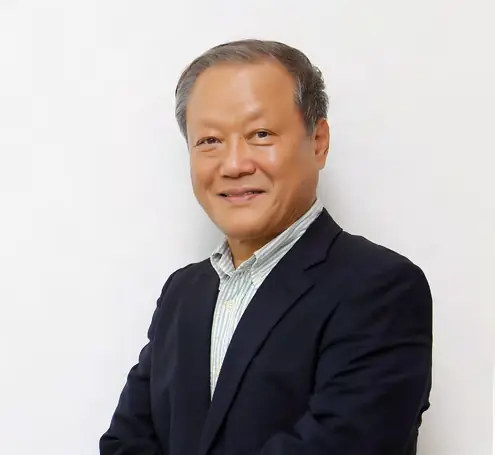

푸른발자국
2025년, 1,541,298명의 그린리더가
환경재단과 함께 걸었습니다.
환경재단은 우리 사회의 *지속가능성*을 위해 정부·기업·시민사회와 협력하는 *실천공동체*입니다.
2030년까지1000만 명의 그린리더와함께 하겠습니다.
이를 위해 그린디지털 전환으로 혁신하며, 국내외 정부·기업·시민사회와 협력하고 연대하겠습니다.
- 장벽을 뛰어넘고 문제를 돌파하는 그린리더를 육성합니다.
- 객관적 사실에 근거하며 현장에서 함께 행동합니다.
- 다양한 목소리에 귀기울이고 세대와 지역을 포용합니다.
- 창의와 혁신으로 문제를 같이 해결해 나갑니다.
- 협력과 시너지로 지속가능한 삶의 방식을 현실로 만듭니다.
숫자로 본 2025
정부·기업·시민사회가 함께하면 기후난제를 풀 수 있다는 희망으로, 올해도 다양한 활동을 이어갔습니다.

50년 전, 저는 거리에서 환경운동을 시작했습니다. 공장 굴뚝에서 뿜어져 나오던 매연, 오염된 강물, 중금속에 오염된 농촌의 아이들. 그때의 환경문제는 눈앞의 생존과 직결된 것이었습니다. 반세기가 흐른 지금, 세상은 달라졌지만 문제의 본질은 여전합니다. 기후위기라는 더 거대한 파도가 우리 앞에 놓여 있습니다.
절망에 머물 것이냐,
희망을 선택할 것이냐.
돌이켜보면 환경운동은 늘 두 갈래 길 위에 서 있었습니다. 저는 언제나 후자를 선택했습니다. 싸움과 저항에서 시작했지만, 이제는 연대와 협력, 그리고 대안을 만드는 일로 이어져야 합니다. 그것이 제가 오랜 세월 얻은 교훈입니다.
환경재단은 그 길 위에서 새로운 세대와 손을 맞잡고 있습니다. 기업과 정부, 시민이 서로 다른 언어를 쓰던 시절을 지나, 이제는 함께 길을 내고 있습니다. 특히 젊은 그린리더들이 삶의 터전에서 스스로 실천하며 변화를 이끌어가는 모습을 볼 때마다, 환경운동의 미래를 다시 확신합니다.
앞으로 우리가 맞이할 10년은 지난 50년보다 더 치열할 것입니다. 그러나 저는 믿습니다. 우리가 서로의 손을 놓지 않는다면, 기후위기를 넘어서 인류의 새로운 길을 열 수 있을 것입니다. 환경재단이 그 길의 맨 앞에서 여러분과 함께하겠습니다. 감사합니다.
환경재단 이사회
23년의 푸른발자국
2025년의 발자국
함께하는 사람들
올해 환경재단과 함께한 그린리더들이 전하는 이야기입니다.